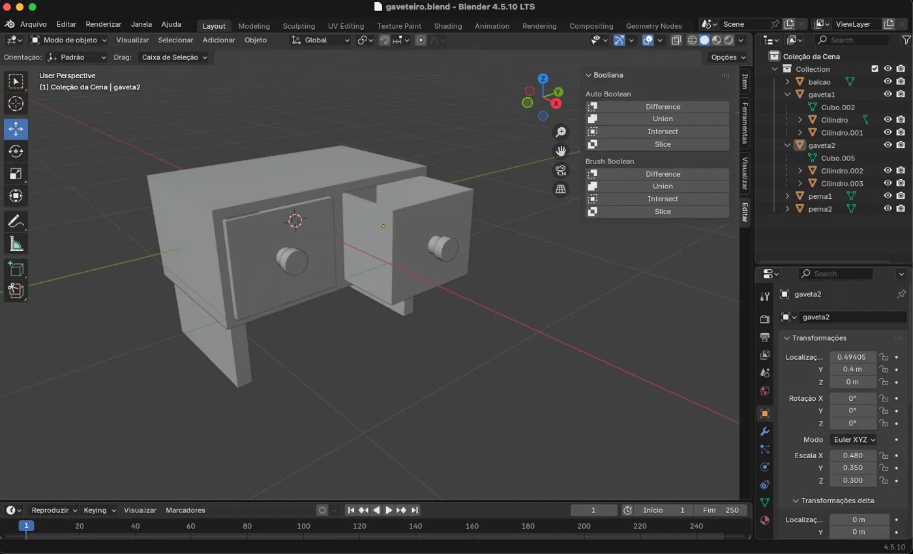
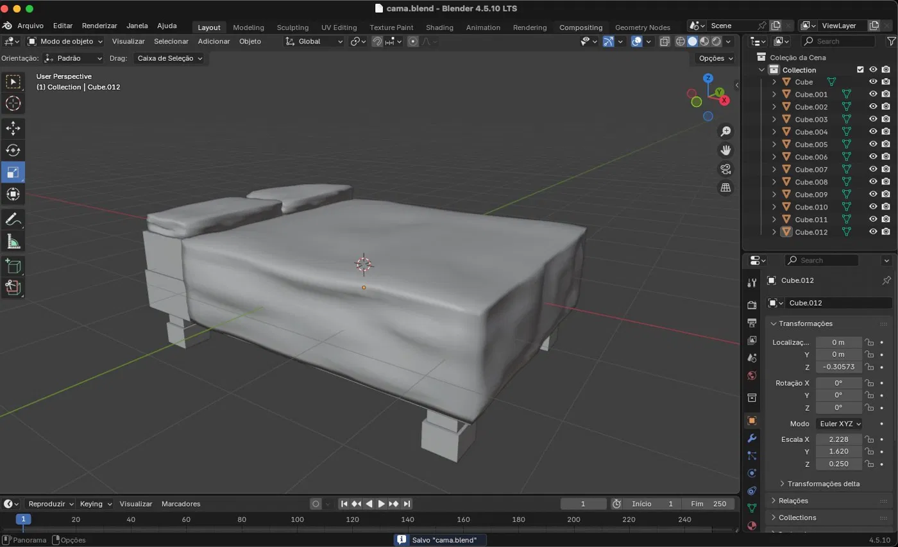

A Última Gravação inteira — todos os móveis, paredes, portas, o rádio, o microfone, cada caixa de papelão do depósito — foi modelada usando apenas as formas geométricas nativas do Godot. Caixas e cilindros, combinados, escalados, rotacionados, às vezes com uma operação booleana para escavar o interior de uma gaveta. Nada além disso.
Essa não foi uma limitação imposta de fora. Foi uma escolha consciente. O jogo precisava rodar direto no navegador, exportado via WebAssembly, e isso significa que cada triângulo extra na cena tem um custo real — tempo de carregamento, memória, frames perdidos em hardware mais simples. A regra era clara: menor número de polígonos e faces possível, sempre que a forma permitisse. Funcionou. A estação de rádio inteira coube em pouco mais de 40MB de build.
UMA FERRAMENTA NOVA NA CAIXA
O próximo projeto não tem essa mesma restrição. Não será exportado para a web — será construído para PC, rodando em Godot 4.3 com o renderer Forward+. Isso abre espaço para repensar como os objetos do jogo são criados, e a resposta que encontramos foi sair do CSG e entrar de cabeça no Blender.
Não é a primeira vez que o Blender aparece por aqui — ele já foi usado para resolver problemas pontuais de escala e pipeline GLB durante experimentos anteriores. Mas agora ele virou ferramenta principal de modelagem, e as últimas semanas foram dedicadas a estudar de verdade como utilizá-lo: parenting de objetos, modificadores booleanos para cortar vãos de porta direto na geometria, e o início de sculpt para dar peso e imperfeição orgânica a superfícies que antes seriam apenas caixas perfeitas.
// O gaveteiro
Um dos primeiros estudos sérios de composição foi um gaveteiro de madeira — corpo, duas gavetas independentes, cada uma com seus próprios puxadores cilíndricos agrupados como filhos do objeto da gaveta. É a mesma lógica de hierarquia de nós que qualquer pessoa acostumada com a árvore de cena do Godot reconhece imediatamente, só que aplicada dentro do Blender, com muito mais liberdade de edição de geometria do que o CSG jamais ofereceria.

A proporção já lê como móvel real, não como teste. E a estrutura por trás — gavetas organizadas como nós próprios, prontas para receber animação de abrir e fechar — mostra que mesmo em fase de estudo já existe preocupação com como esses modelos vão se comportar depois, dentro do jogo.
// A cama
O segundo estudo foi mais ambicioso: uma cama com colchão, almofadas, cabeceira e pés, usando Subdivision Surface combinado com sculpt para criar a deformação orgânica do tecido, seguido de sombreamento suave para eliminar qualquer aspecto facetado na superfície final.

É um tipo de detalhe que simplesmente não existia no vocabulário visual de A Última Gravação. Uma superfície com peso, com amassados sutis, com a sensação de que alguém de fato dormiu ali — ou não dormiu, dependendo de onde a história for parar.
O QUE ISSO MUDA
Modelagem inteira via CSG nativo do Godot. Formas geométricas básicas, polígonos reduzidos ao mínimo, otimizado para export web via WebAssembly. Pipeline rápido, mas com limite claro de detalhe orgânico.
Modelagem via Blender — open source, gratuito, com décadas de refinamento em ferramentas de edição de geometria. Sculpt, booleanos, parenting avançado. Construído para PC, sem a restrição de peso de download que a web exige.
Vale reforçar um ponto: o Blender é open source, assim como o Godot. Toda a stack de ferramentas da KeyWord Games — engine e modelagem — continua sendo construída sobre software livre, sem depender de licenças pagas ou ferramentas proprietárias. Isso importa para um estúdio que está aprendendo em público, documentando cada passo, e quer que esse caminho seja replicável por qualquer outra pessoa que esteja começando do zero também.
UM SPOILER PEQUENO
Não vamos contar a história. Não ainda. Mas existe um próximo jogo sendo desenhado, e ele já tem nome, ambientação e uma estrutura narrativa bem mais ambiciosa do que os sete dias de A Última Gravação permitiriam.
O QUE VEM A SEGUIR
Os estudos no Blender continuam. A planta da casa está sendo remodelada do zero agora que o domínio da ferramenta está mais sólido — sem as limitações do primeiro teste, com mais confiança para usar sculpt e booleanos onde fizer sentido. Quando a casa estiver pronta e aprovada, a construção do jogo de verdade começa.
A KeyWord Games continua sendo, antes de tudo, um processo de aprendizado público. Esse devlog existe para isso — para mostrar não só o que funciona, mas o caminho de tentativa, ferramenta nova e erro até chegar lá.